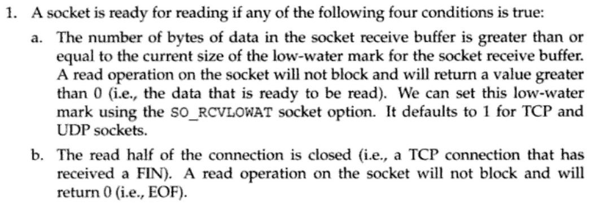
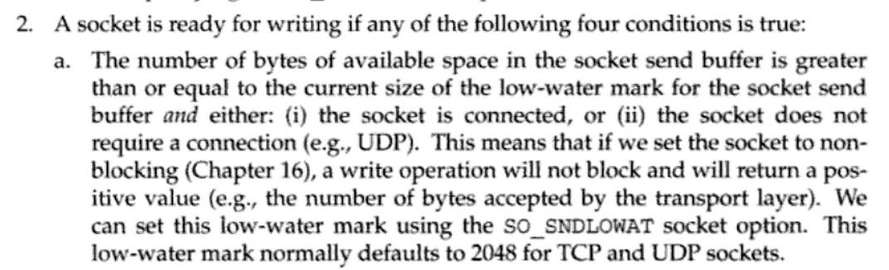
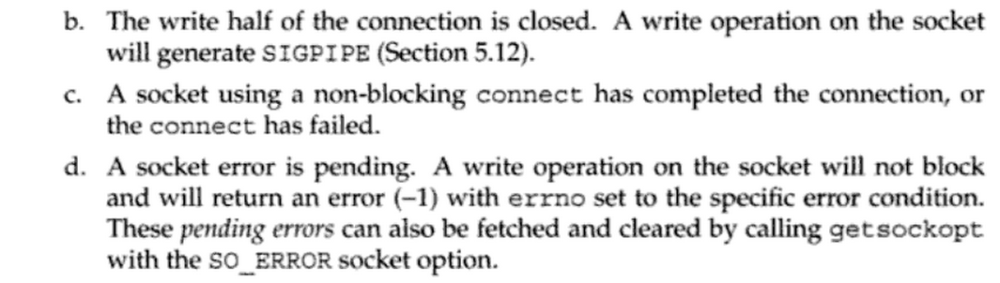

套接字编程入门
1 引言
在 计算机网络理论知识 一文中，我们已简要讨论了TCP套接字编程的基本概念，大致如下图所示:

在本文中，我们将更深入讨论套接字编程，并用python的socket模块来介绍具体编码的细节问题。
2 套接字地址
2.1 host主机名
host最简单就是人们熟知的IP地址，然后就是由本地hosts文件解析或者网络DNS系统解析的名字。比如 localhost 或者 python.org 等。socket模块里面有 gethostbyname 函数，可以获取该hostname具体对应的IP地址。
>>> socket.gethostbyname('python.org')
'104.130.43.121'
不过gethostbyname函数只支持IPv4地址，现在推荐使用 getaddrinfo 函数，其同时支持IPv4和IPv6地址。其参数设置如下:
socket.getaddrinfo(host, port, family=0, type=0, proto=0, flags=0)
port可以填写80或者'http'这样的形式，或者设置为None。然后后面的family是地址族，type是套接字类型等，这些这里先暂时略过讨论。
这个函数的返回值是一个列表，其内元素有如下结构:
(family, type, proto, canonname, sockaddr)
具体如下所示:
>>> socket.getaddrinfo('www.github.com','https')
[(<AddressFamily.AF_INET: 2>, <SocketType.SOCK_STREAM: 1>, 6, '', ('192.30.252.131', 443)),
(<AddressFamily.AF_INET: 2>, <SocketType.SOCK_DGRAM: 2>, 17, '', ('192.30.252.131', 443)),
(<AddressFamily.AF_INET: 2>, <SocketType.SOCK_STREAM: 1>, 6, '', ('192.30.252.128', 443)),
(<AddressFamily.AF_INET: 2>, <SocketType.SOCK_DGRAM: 2>, 17, '', ('192.30.252.128', 443))]
这里的 AF_INET 地址族是创建socket套接字对象时的默认地址族，其就是对应的IPv4地址。然后套接字类型 SOCK_STREAM 也是创建套接字对象的默认值，其是字节流套接字。
getaddrinfo函数返回的 family,type,proto 这三个参数可以传递给socket函数用于具体创建一个套接字对象。canonname比较冷门，然后 sockaddr 可以传递给套接字对象的 connect 方法来具体进行套接字连接操作。
我们来用下面这个脚本试一下:
import socket
addrinfos = socket.getaddrinfo('www.163.com','http')
for addrinfo in addrinfos:
socket_parameter = addrinfo[:3]
print(socket_parameter)
addr = addrinfo[-1]
print(addr)
s = socket.socket(*socket_parameter)
try:
s.connect(addr)
print('connected')
except Exception as e:
print(e)
读者还可以用其他域名来试一下。
2.2 地址族
- AF_INET
- IPv4地址
- AF_INET6
- IPv6地址
此外还有一些冷门的地址族:
- AF_UNIX
- AF_NETLINK
- AF_TIPC
2.3 套接字类型
- SOCK_STREAM
- 字节流套接字
- SOCK_DGRAM
- 数据报套接字
上面这两个套接字类型是全平台适用的。
此外还有一些冷门的套接字类型:
- SOCK_RAW
- SOCK_RDM
- SOCK_SEQPACKET
2.4 传输协议
传输协议 proto 一般设置为0。也可以明确指定某个传输协议:
- IPPROTO_CP
- TCP传输协议
- IPPROTO_UDP
- UDP传输协议
- IPPROTO_SCTP
- SCTP传输协议
2.5 timeout
socket.settimeout(None) socket.settimeout(0) socket.settimeout(sec)
- 如果设置为None，则套接字为阻塞模式
- 如果设置为0，则套接字为非阻塞模式
- 如果设置具体某个sec秒，则套接字会等待多少sec秒，然后抛出
socket.timeout异常。
此外还有 setdefaulttimeout 函数可以全局设置后面所有创建的socket对象的timeout。
socket.setdefaulttimeout(10)
2.6 阻塞模式
socket.setblocking(True) socket.setblocking(False)
具体解释见上面。
3 socket对象
如下创建一个套接字对象:
socket.socket(family=AF_INET, type=SOCK_STREAM, proto=0, fileno=None)
这个创建函数前三个参数的含义请参看上面的内容。
3.1 connect方法
客户端套接字具体连接某个host，具体连接的地址参数取决于具体该socket对象的地址族属性，请参看上面的描述信息。
socket.connect(address)
3.2 bind方法
服务器端套接字对象具体绑定在某个地址上。
socket.bind(address)
3.3 listen方法
服务器端套接字具体开始监听。
socket.listen([backlog])
从python3.5开始，backlog参数为可选参数了。这个backlog的意思是最大等待连接数（如果超过这个数，新的连接将被拒绝）。这个数以前一般设置为5，因为那个时候系统最大也才允许是5，但现在可能需要再提高一点了，现在python3.5起，这个数成为可选参数了，文档上说会自动设置一个合适的数，所以就不需要我们操心了。
3.4 accept方法
socket.accept()
服务器端套接字接受某个连接。其将返回 (conn, address) 。这个conn就是之前谈及的新建的连接套接字，这个地址是连接的对面客户端那边的地址。
3.5 close方法
关闭套接字，python有垃圾回收机制，套接字也会自动关闭，不过还是推荐手工 close 它。
socket.close()
3.6 getpeername方法
获取客户端套接字对象所连接的远程主机地址信息。
socket.getpeername()
具体返回地址信息如下所示:
('103.245.222.223', 443)
3.7 getsockname方法
获取本套接字的地址信息:
socket.getsockname()
具体返回地址信息如下:
('192.168.1.22', 34770)
3.8 recv方法
套接字具体接受data。bufsize推荐是2的倍数，比如 2**12 。
socket.recv(bufsize[, flags])
3.9 send方法
套接字发送bytes字节流。
socket.send(bytes[,flags])
3.10 sendall方法
套接字发送全部bytes字节流。
socket.sendall(bytes[, flags])
3.11 fileno方法
socket.fileno()
返回该套接字的文件描述符，这后面在 select.select 中有用。
4 异步编程初探
常规的所谓同步(synchronous)编程就是大家平时编程一般使用的模型，顺序结构，阻塞式，多个函数逐个执行，一个执行完才能执行下一个，如下图所示:

此外还有一种线程并发模型:

python有所谓的GIL概念，很多人对其有指责，而实际上那些支持多线程并发的语言，怕因为这个便利而带来的是更多的困扰吧。想一想我们人脑思考问题同一时间也只能做一件事，也许python的GIL限制并不是一种限制。实际上如果要用多线程并发，人们需要建立好模型，比如最终多个分支线路互不干扰，然后结果平行放入一个列表中等等约束，然后才能放心的使用多线程并发。而在这个约束模型下，python的multiprocess似乎也能很好地胜任这种类型的工作。
继续讨论异步编程模型:

异步编程还有一个名字叫做非阻塞编程，我们看到上面主程序建立事件循环之后，主事件循环过程并没有阻塞其他的程序过程，而是允许其插入其中来执行。实际上这有点类似于我们看到的GUI程序的主设计理念——事件驱动循环机制，所以异步编程还有一个名字叫做事件驱动编程。我对性能优化并不是特别感兴趣，我感兴趣的部分正是这个事件驱动编程。
4.1 低效的诗歌服务器
本例子来自 参考资料3 ，我将其改成了python3版本。
#!/usr/bin/env python3
# -*- coding: utf-8 -*-
import argparse, os, socket, time
def parse_args():
usage = """usage: %prog [options] poetry-file
This is the Slow Poetry Server, blocking edition.
Run it like this:
python3 slowpoetry3.py ecstasy.txt
"""
parser = argparse.ArgumentParser(usage)
help = "The port to listen on. Default to a random available port."
parser.add_argument('-p','--port', type=int, help=help)
help = "The interface to listen on. Default is localhost."
parser.add_argument('--iface', help=help, default='localhost')
help = "The number of seconds between sending bytes."
parser.add_argument('--delay', type=float, help=help, default=.1)
help = "The number of bytes to send at a time."
parser.add_argument('--num-bytes', type=int, help=help, default=20)
parser.add_argument('poetry_file')
args = vars(parser.parse_args())
poetry_file = args['poetry_file']
if not poetry_file:
parser.error('No such file: %s' % poetry_file)
return args
def send_poetry(sock, poetry_file, num_bytes, delay):
"""Send some poetry slowly down the socket."""
inputf = open(poetry_file)
while True:
bytes = inputf.read(num_bytes).encode()
if not bytes:
sock.close()
inputf.close()
return 'end'
print('Sending %d bytes' % len(bytes))
try:
sock.sendall(bytes)
except socket.error:
sock.close()
inputf.close()
return 'error'
time.sleep(delay)
def serve(listen_socket, poetry_file, num_bytes, delay):
while True:
sock, addr = listen_socket.accept()
print('Somebody at %s wants poetry!' % (addr,))
result = send_poetry(sock, poetry_file, num_bytes, delay)
if result == 'end':
print('sending complete')
elif result == 'error':
print('error, sending stopped')
def main():
args= parse_args()
poetry_file = args['poetry_file']
port = args['port']
iface = args['iface']
num_bytes = args['num_bytes']
delay = args['delay']
sock = socket.socket()
sock.bind((iface, port or 0))
sock.listen(5)
print('Serving %s on port %s.' % (poetry_file, sock.getsockname()[1]))
serve(sock, poetry_file, num_bytes, delay)
sock.close()
if __name__ == '__main__':
main()
4.2 获取诗歌客户端
#!/usr/bin/env python3
# -*- coding: utf-8 -*-
import datetime, argparse, socket
def parse_args():
usage = """usage: %prog [options] [hostname]:port ...
This is the Get Poetry Now! client, blocking edition.
Run it like this:
python3 get-poetry3.py port1 port2 port3 ...
"""
parser = argparse.ArgumentParser(usage)
parser.add_argument('port',nargs='+')
args = vars(parser.parse_args())
addresses = args['port']
if not addresses:
print(parser.format_help())
parser.exit()
def parse_address(addr):
if ':' not in addr:
host = '127.0.0.1'
port = addr
else:
host, port = addr.split(':', 1)
if not port.isdigit():
parser.error('Ports must be integers.')
return host, int(port)
return map(parse_address, addresses)
def get_poetry(address):
"""Download a piece of poetry from the given address."""
sock = socket.socket(socket.AF_INET, socket.SOCK_STREAM)
sock.connect(address)
poem = b''
while True:
data = sock.recv(1024)
if not data:
sock.close()
break
else:
print(data.decode('utf-8'),end='')
poem += data
return poem
def format_address(address):
host, port = address
return '%s:%s' % (host or '127.0.0.1', port)
def main():
addresses = parse_args()
elapsed = datetime.timedelta()
for i, address in enumerate(addresses):
addr_fmt = format_address(address)
print('Task %d: get poetry from: %s' % (i + 1, addr_fmt))
start = datetime.datetime.now()
poem = get_poetry(address)
time = datetime.datetime.now() - start
msg = 'Task %d: got %d bytes of poetry from %s in %s'
print(msg % (i + 1, len(poem), addr_fmt, time))
elapsed += time
print('Got %d poems in %s' % (len(list(addresses)), elapsed))
if __name__ == '__main__':
main()
读者可以利用上面的两个脚本来具体测试一下效果。上面的两个脚本，客户端和服务器端都是阻塞式的。我们先开一个服务器端:
python3 slowpoetry3.py -p 10000 ecstasy.txt
然后开两个终端，同时刷如下命令，我们就能看到其中后执行的那个终端的获取文本是被阻塞了的——这是服务器阻塞了。
python3 slowpoetry3.py -p 10000 ecstasy.txt
然后我们在开一个服务器端:
python3 slowpoetry3.py -p 10001 fascination.txt
然后一个客户端运行如下:
python3 get_poetry3.py 10000 10001
然后我们看到这个客户端获取文本是一个个来的，这是客户端阻塞了。
这种一个个来，一个任务做完才能进行下一个的模式是很好理解的，但进程间的通信可以不是这样，请看下面的select风格I/O复用的讨论。
5 select风格I/O复用
Unix有五种I/O模型:
- 阻塞式I/O ，默认的就是阻塞式I/O。
- 非阻塞式I/O，应用程序持续轮询内核看看某个操作是否准备就绪。
- I/O复用，通过select或poll这样的多文件描述符来管理I/O。
- 信号驱动式I/O
- 异步I/O
这五种I/O模型中，最直接的阻塞式I/O模型，而非阻塞I/O轮询机制太过于浪费资源，然后信号驱动I/O和异步I/O应用很少，真正用的最多就是这里的I/O复用。python中的twisted模块和python3.4之后新出来的asyncio里面的事件循环都是基于select风格的I/O复用模型然后再建立起来的类异步I/O概念。
下面将重点结合python的selectors模块来分析这种I/O复用模型。selectors模块从python3.4开始才有，其建构在select模块之上。其有如下五种内置的Selector:
- SelectSelector
- PollSelector
- EpollSelector
- DevpollSelector
- KqueueSelector
不过我们实际使用就使用 DefaultSelector 即可，python会自动选择当前平台最好的Selector。
具体创建一个Selector对象如下所示:
sel = selectors.DefaultSelector()
下面具体说明一下这个Selector对象的一些使用方法。
5.1 register方法
register(fileobj, events, data=None)
为某文件对象（套接字也可以）注册一下好监控某事件。这里的fileobj或者是某个文件描述符，或者该对象有 fileno() 方法——我们知道套接字对象是有这个方法的。
这里可以监控的事件有:
- EVENT_READ
- 可读事件，具体可读的定义 参考资料1 是这样描述的:
- 该套接字接受缓冲区中的数据字节数大于等于套接字接受缓冲区低水平标记的当前大小。对这样的套接字的读是不会阻塞的，其将返回一个大于0的值（也就是具体读入的字节数）。我们可以使用
SO_RCVLOWAT套接字选项来设置该套接字低水平标记，TCP和UDP套接字的默认值是1。【这个很好理解，就是1个字节，如果接受了1个字节或者更多的字节那么就有了可读事件了。】- 该连接的读半部关闭，这样的套接字的读操作将不阻塞并返回0（也就是返回EOF）。【这里就是套接字对面关闭了，那么也将是可读的，我们可以用
if read这样的判断来进行读结束的后续处理。】- 该套接字是一个监听套接字且已完成连接数不为0。【这主要是指服务器端一开始创建的那个监听套接字，其一般accept不会阻塞的，
conn, addr = s.accept()，也就是客户端那边有敲门了，就会有一个可读事件，就会批准自动创建一个监听套接字，除非已完成连接数为0——这个已完成连接数具体含义我还不清楚。】- 上面的情况中，有一个套接字错误待处理，对这样的套接字读操作将不阻塞并返回-1。【这里细节暂时还不清楚。】
- EVENT_WRITE
- 可写事件，具体可写的定义 参考资料1 是这样描述的:
- 该套接字发送缓冲区中的可用空间字节数大于等于套接字发送缓冲区低水平标记的当前大小，并且该套接字已连接（或者该套接字不需要连接，比如UDP套接字）。如果我们把这样的套接字设置为非阻塞，那么写操作将返回一个正值（具体传输层接受到的字节数）。我们可以使用
SO_SNDLOWAT套接字选项来设置该套接字的可写低水平标记，TCP和UDP套接字默认值是2048。【如果套接字是阻塞的，那么写操作应该会因为套接字另一端recv的阻塞而阻塞，这是我的一个猜测。然后这里和上面可读实际上是个反的，可读是相当于数据量超过某个标记，也就是往里面送一点点数据是不行的，还需要送到一定的量，才可读；而可写是送一点点数据都是可写的，只有送的数据量很大之后， 可用的 缓冲区空间 小于 某个标记之后，就不可写了。】- 该连接的写半部关闭。对这样的套接字进行写操作将产生SIGPIPE信息。【我试过，后续程序会出错。对于服务器主动发动数据的模式，都应该考虑这种情况和捕捉好这个可能的异常。】
- 非阻塞连接的套接字已连接或连接已失败。【非阻塞连接初次连接成功可写很好理解，但为什么连接失败也可写？可能这里非阻塞初次连接失败被处理为连接半部关闭的情况了，也就是上面的哪一条。】
- 上面的情况中，有一个套接字错误待处理，对这样的套接字写操作将不阻塞并返回-1。
因为这里需要细细品读，我把英文原文字（来自google books）图片贴在这里，上面的翻译看了一下基本上没有问题。




5.2 unregister方法
取消注册某个文件对象，这个自不必多说。
unregister(fileobj)
5.3 modify方法
和register方法类似的参数，可用于对该Selector对象的初次注册信息的再修改。
modify(fileobj, events, data=None)
5.4 select方法
select(timeout=None)
Selector对象使用很重要的一个方法，首先我们来说明一下该方法的返回值, 其返回值是 (key, events) 这样的元组对组成的列表，每一个对应一个已经好了的监控下的文件对象。
key是SelectorKey对象，其是一个有名数组（namedtuple），有属性如下:
- fileobj
- 具体监控的文件对象
- fd
- 文件描述符
- events
- 对该监控文件对象的监控事件
- data
- 可选参数，通常用于传递要执行的函数和一些参数。
5.5 close方法
关闭本Selector对象。
close()
5.6 select风格的诗歌服务器
下面的例子将之前那个诗歌服务器写成了Select风格的异步版本:
#!/usr/bin/env python3
# -*- coding: utf-8 -*-
import argparse, os, socket, time
import selectors
sel = selectors.DefaultSelector()
def parse_args():
usage = """usage: %prog [options] poetry-file
This is the Slow Poetry Server, blocking edition.
Run it like this:
python3 select_slowpoetry3.py ecstasy.txt
"""
parser = argparse.ArgumentParser(usage)
help = "The port to listen on. Default to a random available port."
parser.add_argument('-p','--port', type=int, help=help)
help = "The interface to listen on. Default is localhost."
parser.add_argument('--iface', help=help, default='localhost')
help = "The number of seconds between sending bytes."
parser.add_argument('--delay', type=float, help=help, default=.1)
help = "The number of bytes to send at a time."
parser.add_argument('--num-bytes', type=int, help=help, default=20)
parser.add_argument('poetry_file')
args = vars(parser.parse_args())
poetry_file = args['poetry_file']
if not poetry_file:
parser.error('No such file: %s' % poetry_file)
return args
def send_poetry(sock, poetry_file, num_bytes, delay,inputf):
"""Send some poetry slowly down the socket."""
bytes = inputf.read(num_bytes)
if not bytes:
sel.unregister(sock)
sock.close()
inputf.close()
print('sending complete')
return True
try:
sock.sendall(bytes)
except socket.error:
sel.unregister(sock)
sock.close()
inputf.close()
print('some error, sending stoped')
return False
time.sleep(delay)
def serve(listen_socket, poetry_file, num_bytes, delay):
sock, addr = listen_socket.accept()
print('Somebody at %s wants poetry!' % (addr,))
sock.setblocking(False)
inputf = open(poetry_file,'rb')
sel.register(sock,selectors.EVENT_WRITE,
data={'callback':send_poetry,'args':[poetry_file,num_bytes,delay,inputf]})
def main():
args= parse_args()
poetry_file = args['poetry_file']
port = args['port']
iface = args['iface']
num_bytes = args['num_bytes']
delay = args['delay']
sock = socket.socket()
sock.bind((iface, port or 0))
sock.listen(100)
sock.setblocking(False)
print('Serving %s on port %s.' % (poetry_file, sock.getsockname()[1]))
sel.register(sock, selectors.EVENT_READ,
data={'callback':serve,'args':[poetry_file,num_bytes,delay]})
while True:
events = sel.select()
for key, mask in events:
callback = key.data['callback']
callback(key.fileobj, *key.data['args'])
sock.close()
if __name__ == '__main__':
main()
然后我们开启服务器:
python3 select_slowpoetry3.py -p 10000 ecstasy.txt
然后我们开启三个终端，输入:
netcat localhost 10000
这就是异步服务器的效果吧。
下面我想写一个异步客户端，但就这里的诗歌推送服务来说，一个客户端同时抓取几个诗歌然后让其他混合显示显然没任何实际使用含义了，所以我决定将获取诗歌客户端大改一下，使其变成一个异步同时下载多个诗歌文件的客户端。
5.7 异步诗歌获取客户端
客户端的编写要更加简单一点，具体代码如下所示:
#!/usr/bin/env python3
# -*- coding: utf-8 -*-
import datetime, argparse, socket
import selectors
sel = selectors.DefaultSelector()
def parse_args():
usage = """usage: %prog [options] [hostname]:port ...
This is the Get Poetry Now! client, blocking edition.
Run it like this:
python3 select_get_poetry3.py port1 port2 port3 ...
通过select I/O复用来建立一个异步诗歌下载客户端，可以同时面向多个诗歌服务器来进行下载。
"""
parser = argparse.ArgumentParser(usage)
parser.add_argument('port',nargs='+')
args = vars(parser.parse_args())
addresses = args['port']
if not addresses:
print(parser.format_help())
parser.exit()
def parse_address(addr):
if ':' not in addr:
host = '127.0.0.1'
port = addr
else:
host, port = addr.split(':', 1)
if not port.isdigit():
parser.error('Ports must be integers.')
return host, int(port)
return map(parse_address, addresses)
def download_poetry(sock,infile):
"""Download a piece of poetry from the given address."""
bstring = sock.recv(1024)
if not bstring:###end fo reading
sel.unregister(sock)
infile.close()
print('end of reading')
return True
else:
print('writing to {}'.format(infile.name))
infile.write(bstring)
def connect(address):
"""Connect to the given server and return a non-blocking socket."""
sock = socket.socket()
sock.connect(address)
sock.setblocking(False)
return sock
def format_address(address):
host, port = address
return '%s:%s' % (host or '127.0.0.1', port)
def main():
addresses = parse_args()
elapsed = datetime.timedelta()
sockets = map(connect, addresses)
for sock in sockets:
filename = str(sock.getpeername()[1]) + '.txt'
infile = open(filename,'wb')
sel.register(sock, selectors.EVENT_READ,
data={'callback':download_poetry,
'args':[infile]})
while True:
events = sel.select()
for key,mask in events:
callback = key.data['callback']
callback(key.fileobj, *key.data['args'])
if __name__ == '__main__':
main()
这里主要的改动有两点:
- 客户端同时开启几个sock，然后这些sock和可读时间绑定了download_poetry方法，只要有数据可读了，那么就会执行该操作。
- 具体下载行为就是对目标fileobj进行write，把接受到的字节流给写进去即可。
该程序最后会返回一个错误，网上稍微搜了一下，似乎是目前python3.4版本的selectors或者select模块的一个bug:
ValueError: maxevents must be greater than 0, got 0
6 事件驱动编程入门
通过Selectors模块，不仅现在我们的程序是高效的异步模式了，而且之前代码中那几个丑陋的 while True 给压缩到只有一个了，对于追求代码美观的程序员来说他们会对这一进步会感到很满意。而程序刚开始那个 while True 人们也有点看不习惯它了。人们慢慢的构建出"reactor"这个术语来取代这个主循环，如下图所示:

在twisted模块中实际上就有这么一个reactor变量，来对应这个主Selector事件驱动。而asyncio模块里面也有类似的eventloop概念:
import asyncio eventloop = asyncio.get_event_loop()
从python3.4起，其新加入了asyncio模块，因为python3已经变得越来越流行起来，加上twisted模块和asyncio模块非常类似，所以后面的例子将使用python3的asyncio模块来说明具体编码细节问题。
在进行事件驱动编程之前还需要强调一点，上图这个 事件循环 的概念是事件驱动编程的核心概念，实际上在前面的select风格异步编程中，我们就已经看到这点影子了，那就是开启事件循环之后，剩下的工作就是挂载一些函数，这些函数里面会涉及到另外一些函数的挂载和取消挂载操作等，我们可以在脑海中想象中间一个事件循环大圈，然后四周八围挂载着各种函数各种操作，这就是事件驱动编程风格了。实际上事件驱动编程会让很多工作变得简单，其没有让事情变得复杂，关键是我们的头脑要习惯这种编程风格，脑海里还熟悉这种事件驱动模型。
6.1 第一个例子
本例子来自官网:
import asyncio
@asyncio.coroutine
def hello_world():
print("Hello World!")
loop = asyncio.get_event_loop()
# Blocking call which returns when the hello_world() coroutine is done
loop.run_until_complete(hello_world())
loop.close()
上面这个小例子就是开始循环事件，然后执行hello_world()这个协程，然后关闭事件循环。
6.1.1 get_event_loop函数
获得全局性的那个事件驱动循环，返回一个EventLoop对象。
6.1.2 run_until_complete方法
EventLoop的 run_until_complete 方法。
该方法本来是要接受一个Future对象，然后将其执行完。如果接受的是一个协程对象（coroutine object），则要将其转变成为Task对象（Task对象是Future对象的子类）。
6.1.3 close方法
EventLoop对象的close方法，关闭事件循环。
6.1.4 stop方法
停止运行事件循环，和close方法的区别就是stop方法之前回调的函数还会继续运行，之后的不会（如果后面又有 run_forever 语句，则后面回调的那些函数又会被执行。）。而close方法是完全强制中止了。
6.1.5 run_forever方法
运行事件循环，直到stop方法被调用。
6.2 事件驱动式诗歌服务器
结合上面对于asyncio模块的初步讨论，现在我们可以写出一个事件驱动式的诗歌服务器了，其代码比之前的select风格更简洁和美观了。
#!/usr/bin/env python3
# -*- coding: utf-8 -*-
import argparse, os, socket, time
import asyncio
def parse_args():
usage = """usage: %prog [options] poetry-file
This is the Slow Poetry Server, blocking edition.
Run it like this:
python3 asyncio_slowpoetry3.py ecstasy.txt
"""
parser = argparse.ArgumentParser(usage)
help = "The port to listen on. Default to a random available port."
parser.add_argument('-p','--port', type=int, help=help)
help = "The interface to listen on. Default is localhost."
parser.add_argument('--iface', help=help, default='localhost')
help = "The number of seconds between sending bytes."
parser.add_argument('--delay', type=float, help=help, default=.1)
help = "The number of bytes to send at a time."
parser.add_argument('--num-bytes', type=int, help=help, default=20)
parser.add_argument('poetry_file')
args = vars(parser.parse_args())
poetry_file = args['poetry_file']
if not poetry_file:
parser.error('No such file: %s' % poetry_file)
return args
def send_poetry(eventloop,sock, poetry_file, num_bytes, delay,inputf):
"""Send some poetry slowly down the socket."""
bytes = inputf.read(num_bytes)
if not bytes:
eventloop.remove_writer(sock)
sock.close()
inputf.close()
print('sending complete')
return True
try:
sock.sendall(bytes)
except socket.error:
eventloop.remove_writer(sock)
sock.close()
inputf.close()
print('some error, sending stoped')
return False
time.sleep(delay)
def serve(eventloop,listen_socket, poetry_file, num_bytes, delay):
sock, addr = listen_socket.accept()
print('Somebody at %s wants poetry!' % (addr,))
sock.setblocking(False)
inputf = open(poetry_file,'rb')
eventloop.add_writer(sock, send_poetry, eventloop,sock,poetry_file,num_bytes,delay,inputf)
def main():
args= parse_args()
poetry_file = args['poetry_file']
port = args['port']
iface = args['iface']
num_bytes = args['num_bytes']
delay = args['delay']
sock = socket.socket()
sock.bind((iface, port or 0))
sock.listen(100)
sock.setblocking(False)
print('Serving %s on port %s.' % (poetry_file, sock.getsockname()[1]))
eventloop = asyncio.get_event_loop()
eventloop.add_reader(sock,serve,eventloop,sock,poetry_file,num_bytes,delay)
try:
eventloop.run_forever()
finally:
eventloop.close()
sock.close()
if __name__ == '__main__':
main()
6.2.1 add_reader方法
BaseEventLoop.add_reader(fd, callback, *args)
事件循环对象的 add_reader 方法，监听某个文件，如果可读事件发生，则执行callback函数，后面是传递给callback函数的一些参数。
6.2.2 remove_reader方法
移除某个reader。
6.2.3 add_writer方法
监听可写事件。
BaseEventLoop.add_writer(fd, callback, *args)
6.2.4 remove_writer方法
移除某个writer。
6.3 事件驱动诗歌获取客户端
这里也将之前的诗歌获取客户端写成asyncio版本。代码如下所示，改动不是很大。
#!/usr/bin/env python3
# -*- coding: utf-8 -*-
import datetime, argparse, socket
import asyncio
def parse_args():
usage = """usage: %prog [options] [hostname]:port ...
This is the Get Poetry Now! client, blocking edition.
Run it like this:
python3 select_get_poetry3.py port1 port2 port3 ...
通过select I/O复用来建立一个异步诗歌下载客户端，可以同时面向多个诗歌服务器来进行下载。
"""
parser = argparse.ArgumentParser(usage)
parser.add_argument('port',nargs='+')
args = vars(parser.parse_args())
addresses = args['port']
if not addresses:
print(parser.format_help())
parser.exit()
def parse_address(addr):
if ':' not in addr:
host = '127.0.0.1'
port = addr
else:
host, port = addr.split(':', 1)
if not port.isdigit():
parser.error('Ports must be integers.')
return host, int(port)
return map(parse_address, addresses)
def download_poetry(eventloop,sock,infile):
"""Download a piece of poetry from the given address."""
bstring = sock.recv(1024)
if not bstring:###end fo reading
eventloop.remove_reader(sock)
sock.close()
infile.close()
print('end of reading')
return True
else:
print('writing to {}'.format(infile.name))
infile.write(bstring)
def connect(address):
"""Connect to the given server and return a non-blocking socket."""
sock = socket.socket()
sock.connect(address)
sock.setblocking(False)
return sock
def format_address(address):
host, port = address
return '%s:%s' % (host or '127.0.0.1', port)
def main():
addresses = parse_args()
sockets = map(connect, addresses)
eventloop = asyncio.get_event_loop()
for sock in sockets:
filename = str(sock.getpeername()[1]) + '.txt'
infile = open(filename,'wb')
eventloop.add_reader(sock,download_poetry,eventloop,sock,infile)
try:
eventloop.run_forever()
finally:
eventloop.close()
if __name__ == '__main__':
main()
值得一提的是这里的读完毕的判断逻辑:
if not bstring:###end fo reading
eventloop.remove_reader(sock)
sock.close()
infile.close()
print('end of reading')
return True
如果读半部关闭，则将返回0，所以可以如上来判断读操作是否完毕了。
6.4 基于协议的网络编程
asyncio模块还提供了很多功能可以让读者不用使用socket模块，而直接更高层的基于协议来编写网络程序。下面是 诗歌服务器第二版，本例子参考了 这个网页 然后修改而成。
#!/usr/bin/env python3
# -*- coding: utf-8 -*-
import argparse, os, time
import asyncio
def parse_args():
usage = """usage: %prog [options] poetry-file
This is the Slow Poetry Server, blocking edition.
Run it like this:
python3 asyncio_slowpoetry3.py ecstasy.txt
"""
parser = argparse.ArgumentParser(usage)
help = "The port to listen on. Default to a random available port."
parser.add_argument('-p','--port', type=int, help=help)
help = "The interface to listen on. Default is localhost."
parser.add_argument('--iface', help=help, default='127.0.0.1')
help = "The number of bytes to send at a time."
parser.add_argument('--num-bytes', type=int, help=help, default=20)
parser.add_argument('poetry_file')
args = vars(parser.parse_args())
poetry_file = args['poetry_file']
if not poetry_file:
parser.error('No such file: %s' % poetry_file)
return args
class PoetryServeProtocol(asyncio.Protocol):
def __init__(self,inputf,num_bytes):
self.inputf = inputf
self.num_bytes = num_bytes
def connection_made(self,transport):
self.transport = transport
print(self.transport)
def data_received(self,data):
if data == b'poems':
poem = self.inputf.read(self.num_bytes)
if poem:
self.transport.write(poem)
else:
self.transport.write_eof()
def main():
args= parse_args()
poetry_file = args['poetry_file']
num_bytes = args['num_bytes']
port = args['port']
iface = args['iface']
inputf = open(poetry_file,'rb')
eventloop = asyncio.get_event_loop()
print(iface,port)
coro = eventloop.create_server(lambda:PoetryServeProtocol(inputf,num_bytes),iface,port)
server = eventloop.run_until_complete(coro)
print(server)
try:
eventloop.run_forever()
finally:
eventloop.close()
if __name__ == '__main__':
main()
代码变得简单得可怕了。首先我们看到这个 create_server 方法。
6.5 create_server方法
通过这个方法，我们可以基于自己定义的某个协议来创建一个TCP server（返回的是协程对象）。下面主要看到具体创建的那个协议对象。
6.6 Protocol类
自定义的协议继承自Protocol类，然后定义一些方法:
- connection_made
- 这个callback继承自Protocol类，逻辑是如果一个连接建好了，那么执行该函数。其接受一个参数transport。也就是具体协议的传输层。
- data_received
- 这个callback继承自Protocol类，如果某个数据传进来了，那么该函数将被执行。其接受一个参数就是传进来的data。
- eof_received
- 数据结束完毕是调用。你可以在另外一端用transport发送写入结束信号
write_eof()。
配套的获取诗歌客户端如下所示:
#!/usr/bin/env python3
# -*- coding: utf-8 -*-
import datetime, argparse
import asyncio
def parse_args():
usage = """usage: %prog [options] [hostname]:port ...
This is the Get Poetry Now! client, blocking edition.
Run it like this:
python3 select_get_poetry3.py port1 port2 port3 ...
通过select I/O复用来建立一个异步诗歌下载客户端，可以同时面向多个诗歌服务器来进行下载。
"""
parser = argparse.ArgumentParser(usage)
parser.add_argument('port',nargs='+')
args = vars(parser.parse_args())
addresses = args['port']
if not addresses:
print(parser.format_help())
parser.exit()
def parse_address(addr):
if ':' not in addr:
host = '127.0.0.1'
port = addr
else:
host, port = addr.split(':', 1)
if not port.isdigit():
parser.error('Ports must be integers.')
return host, int(port)
return map(parse_address, addresses)
class PoetryClientProtocol(asyncio.Protocol):
def __init__(self,infile):
self.infile = infile
def connection_made(self,transport):
print(transport.get_extra_info('peername'))
self.transport = transport
self.transport.write(b'poems')
def data_received(self, data):
if data:
print(data)
print('writing to {}'.format(self.infile.name))
self.infile.write(data)
self.transport.write(b'poems')
def eof_received(self):
print('end of writing')
self.infile.close()
def main():
addresses = parse_args()
eventloop = asyncio.get_event_loop()
for address in addresses:
host, port = address
filename = str(port) + '.txt'
infile = open(filename,'wb')
coro = eventloop.create_connection(lambda:PoetryClientProtocol(infile),host, port)
t,p = eventloop.run_until_complete(coro)
print(t,p)
try:
eventloop.run_forever()
finally:
eventloop.close()
if __name__ == '__main__':
main()
很粗糙的一个例子。本文内容有点多了，实际上事件驱动编程里面还有很多内容。但至此套接字编程入门就算是告一个段落了，更多的事件驱动编程细节，请参看 事件驱动编程 一文。
7 参考资料
- Unix网络编程卷1: 套接字联网API , Author: W. R. Stevens , Bill Fenner 等著 , version: 第三版
- Beej's Guide to Network Programming Using Internet Sockets
- twisted与异步编程入门, 这是 中文在线阅读网页 ，这是 英文原版网页 。
- twisted network programming essentials second editon , author: Jessica McKellar and Abe Fettig
- 关于defer机制的介绍 defer-intro 。